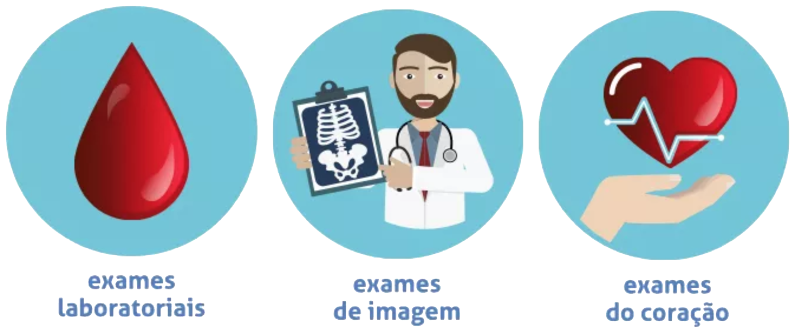

<!--
  Generated template for the ExamePage page.

  See http://ionicframework.com/docs/components/#navigation for more info on
  Ionic pages and navigation.
-->
<ion-header>

  <ion-toolbar>
      <button ion-button menuToggle>
          <ion-icon name="menu"></ion-icon>
        </button>
    <ion-title>exame</ion-title>
  </ion-toolbar>

</ion-header>


<ion-content padding>

    

</ion-content>
